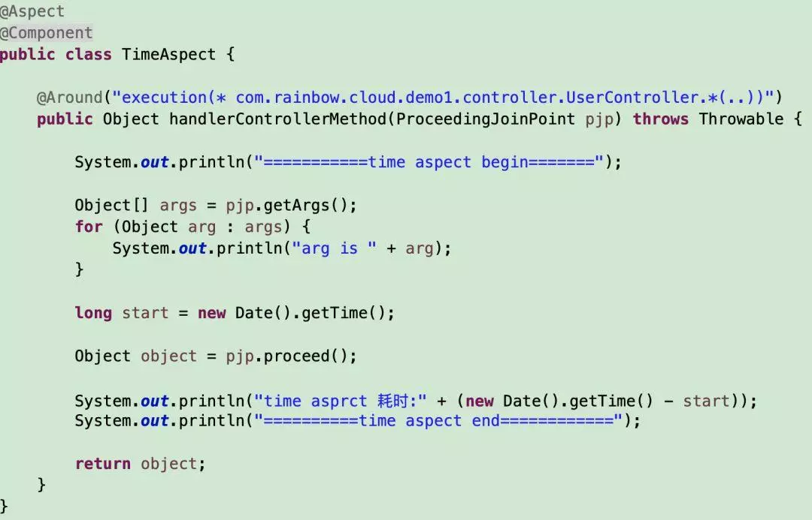
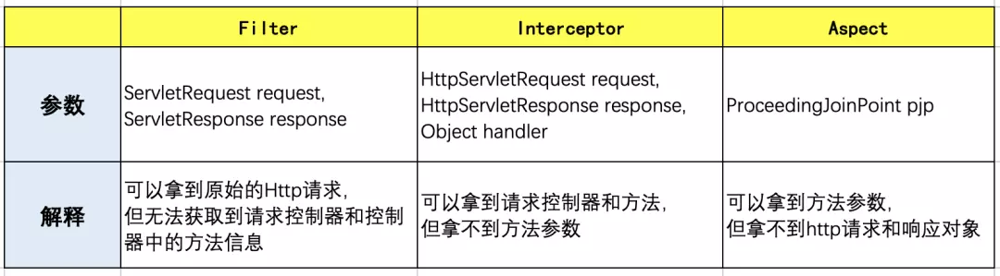

原文连接:https://www.cnblogs.com/java-friend/p/11570825.html
小伙伴们应该听说过过滤器、拦截器、切面，印象上都能够起到截断拦截的作用，在做一些业务需求时，不知道如何选择，今天老顾就来介绍一下他们之间的区别。
过滤器可以拦截到方法的请求和响应 (ServletRequest request, ServletResponse response), 并对请求响应做出过滤操作。
过滤器依赖于 servlet 容器。在实现上，基于函数回调，它可以对几乎所有请求进行过滤，一个过滤器实例只能在容器初始化时调用一次。
使用过滤器的目的是用来做一些过滤操作，获取我们想要获取的数据，比如：在过滤器中修改字符编码；在过滤器中修改 HttpServletRequest 的一些参数，包括：过滤低俗文字、危险字符等。话不多说，先上代码。
再定义两个 Controller，一个 UserController，一个 OrderController
虽然 Filter 过滤器和 Controller 请求都已经定义了，但现在过滤器是不起作用的。需要把 Filter 配置一下，有两个方案第一个方案在 Filter 上面加上 @Component。
@Component
public class TimeFilter implements Filter
第二个方案配置化注册过滤器
第二个方案的特点就是可以细化到过滤哪些规则的 URL 我们来启动应用时，过滤器被初始化了，init 函数被回调。
看看控制台的日志输出

控制台日志输出
停止应用后，控制台输出
Filter 随 web 应用的启动而启动，只初始化一次，随 web 应用的停止而销毁。
- 启动服务器时加载过滤器的实例，并调用 init() 方法来初始化实例； 2. 每一次请求时都只调用方法 doFilter() 进行处理； 3. 停止服务器时调用 destroy() 方法，销毁实例。
正是金九银十跳槽季，为大家收集了 2019 年最新的面试资料，有文档、有攻略、有视频。有需要的同学可以在公众号【Java 知己】，发送【面试】领取最新面试资料攻略！暗号【1024】千万不要发，否则.....
我们再来看看 doFilter 方法
doFilter(ServletRequest request, ServletResponse response, FilterChain chain)
从参数我们看到，filter 里面是能够获取到请求的参数和响应的数据；但此方法是无法知道是哪一个 Controller 类中的哪个方法被执行。还有一点需要注意的是，filter 中是没法使用注入的 bean 的，也就是无法使用 @Autowired
上面代码注入的值为 null。这是为什么呢？
其实 Spring 中，web 应用启动的顺序是：listener->filter->servlet，先初始化 listener，然后再来就 filter 的初始化，再接着才到我们的 dispathServlet 的初始化，因此，当我们需要在 filter 里注入一个注解的 bean 时，就会注入失败，因为 filter 初始化时，注解的 bean 还没初始化，没法注入。 如果一定你要使用，需要做一些处理，可以私信老顾哦
依赖于 web 框架，在 SpringMVC 中就是依赖于 SpringMVC 框架。在实现上, 基于 Java 的反射机制，属于面向切面编程（AOP）的一种运用，就是在一个方法前，调用一个方法，或者在方法后，调用一个方法。
在 WebMvcConfigurationSupport 配置一下
执行结果
我们发现拦截器中可以获取到 Controller 对象
preHandle(HttpServletRequest request, HttpServletResponse response, Object handler)
object handler 就是 controller 方法对象
HandlerMethod handlerMethod = (HandlerMethod)handler;
handlerMethod.getBean().getClass().getName();
handlerMethod.getMethod().getName();
但我们发现获取不到方法的参数值，这个是为什么呢？在 DispatcherServlet 类中，方法 doDispatch(HttpServletRequest request, HttpServletResponse response)。
applyPreHandle 这个方法执行，就是执行的拦截器的 preHandler 方法，但这个过程中，controller 方法没有从 request 中获取请求参数，组装方法参数；而是在 ha.handle 这个方法的时候，才会组装参数。
虽然没法得到方法的参数，但是可以获得 IOC 的 bean 哦。
再说明一点的是 postHandler 方法。
postHandler 方法的执行，当 controller 内部有异常，posthandler 方法是不会执行的。
afterCompletion 方法，不管 controller 内部是否有异常，都会执行此方法；此方法还会有个 Exception ex 这个参数；如果有异常，ex 会有异常值；没有异常 此值为 null。
注意点如果 controller 内部有异常，但异常被 @ControllerAdvice 异常统一捕获的话，ex 也会为 null
AOP 操作可以对操作进行横向的拦截, 最大的优势在于他可以获取执行方法的参数, 对方法进行统一的处理。常见使用日志, 事务, 请求参数安全验证等。

上面的代码中，我们是可以获取方法的参数的
虽然切面 aop 可以拿到方法参数，但拿不到 response，request 对象。
我们这里来总结一下过滤器、拦截器、Aspect，看看区别

如果三者方式同时采用，那他们的执行顺序是什么呢？
filter -> interceptor -> ControllerAdvice -> aspect -> controller
返回值顺序，或异常返回顺序
controller -> aspect -> controllerAdvice -> Interceptor -> Filter

用一个图描述一下执行顺序
小伙伴们可以根据自身业务，和上面技术的各自特点，去选择相应的技术。今天老顾就介绍到这里，谢谢！！！
“不积跬步，无以至千里”，希望未来的你能：有梦为马 随处可栖！加油，少年！
关注公众号:「Java 知己」，每天更新Java知识哦，期待你的到来！
- 发送「1024」，免费领取 30 本经典编程书籍。
- 发送「Group」，与 10 万程序员一起进步。
- 发送「面试」，领取BATJ面试资料、面试视频攻略。
- 发送「JavaEE 实战」，领取《JavaEE 实战》系列视频教程。
- 发送「玩转算法」，领取《玩转算法》系列视频教程。